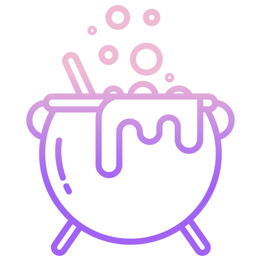

Releases from your
Git history.
GitCraft reads your commits, determines the version bump, creates the tag, and ships it — zero config to start.
Zero config start
Works out of the box on any repo following Conventional Commits. No setup required.
Correct SemVer
Detects breaking changes (feat!, BREAKING CHANGE:) and bumps major, minor, or patch accordingly.
Monorepo support
Independent versioning for packages within a monorepo. Use path filtering and custom tag prefixes.
Release channels
Auto-maps branches to channels: main → stable, develop → alpha, feature/* → feature preview.
Azure-native
First-class Azure DevOps pipeline task. Exposes version, tag, and bump type as pipeline variables.
Dry run mode
Preview exactly what will be released before committing. Safe to run in PR builds.
Plugin-ready
Extensible design for changelog generation, Slack notifications, Jira integration, and more.
Release Channels
| Branch | Channel | Example output |
|---|---|---|
| main / master | stable | 1.4.0 |
| develop | alpha | 1.4.0-alpha.2 |
| release/* | rc | 1.4.0-rc.0 |
| feature/* | feature | 1.4.0-feature-login.0 |